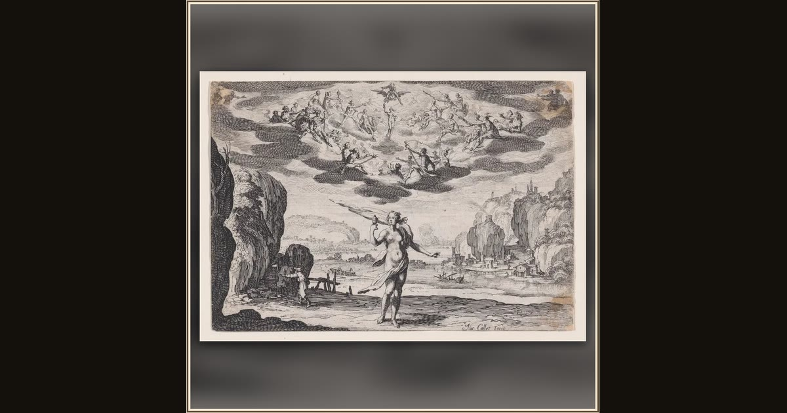

Pandore (Pandora)
Jacques Callot · ca. 1625 · met
Callot’s etching shows a woman in a landscape beneath figures gathered in clouds; Hesiod describes Pandora brought before gods and mortals (585–589) Explore its place in Hesiod's Poems, Theogony, line 585.